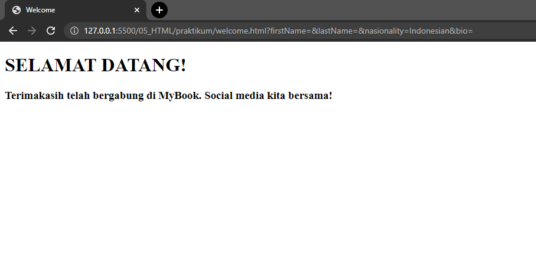
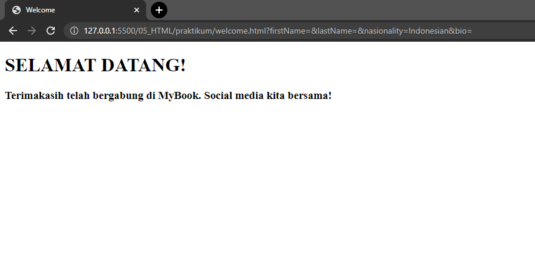

Weekly Task
Berikut adalah daftar materi yang telah dipelajari di Alterra Academy.
Git
Berikut adalah screenshot tugas materi Git, tugasnya adalah melakukan merge dan branching dengan git. Screenshot berikut adalah gambar network diagram yang menggambarkan branchnya.
Introduction to UI UX
Pada tugas ini dilakukan pencarian 3 page pada suatu website. Pada tugas ini saya mengambil studi kasus website soundcloud.com. Ada 3 page yang saya ambil, yaitu home, login dan register, berikut adalah screenshot pagenya.
Figma
Pada tugas figma dilakukan pembuatan prototype website yang telah dipilih pada tugas sebelumnya. Berikut adalah screenshotnya.
 

HTML
Pada tugas HTML membuat form sederhana dengan menggunakan tag pada HTML. Ada 3 page yang dibuat, page home, form dan welcome. Berikut adalah screenshotnya.


CSS
Pada tugas CSS ada dua yang dibuat, pertama adalah membuat box dengan size dan posisi yang telah ditentukan di soal. Selanjutnya dilakukan pembuatan website blog sederhana dengan navbar yang memiliki hamburger menu. Berikut ini adalah screenshotnya.

Bootstrap
Pada tugas Bootstrap dilakukan pembuatan website statis sesuai dengan screenshot yang telah diberikan di soal. Berikut adalah hasilnya.


Javascript Refreshment
Pada tugas javascript dilakukan pengerjaan soal-soal logika dengan menggunakan javascript. Berikut adalah output dari beberapa soal tersebut.
Clean Code
Pada tugas clean code diberikan dua problem yang harus diselesaikan. Problem pertama adalah menganalisis kode dan mencari kesalahannya, sedangkan problem kedua memperbaiki kodenya. Berikut ini adalah hasil dari kedua problem yang sudah diperbaiki sehingga kodenya bisa berjalan.